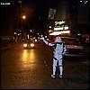
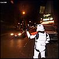
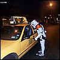
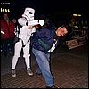

	<section id="story-highlights">

		<h2>Story Highlights</h2>

		<a href="../../gallery/source/nyline-1-day-17/nyline-05171999A.JPG"></a>

		<a href="../../gallery/source/nyline-1-day-17/nyline-05171999B.JPG"></a>

		<a href="../../gallery/source/nyline-1-day-17/nyline-05171999C.JPG"></a>

		<a href="../../gallery/source/nyline-1-day-17/nyline-05171999D.JPG"></a>

	</section>

	<aside id="related-media">

		<h2>Related Media</h2>

		<p>Photos: <a href="../../gallery/nyline-1-day-17.html">NYLine I: Day 17</a></p>

		<p>Videos: <a href="https://www.youtube.com/watch?v=H-x6jzpGKHk">NYLine I News: Episode 4 - Live from the Ticket Buyers Line</a></p>

	</aside>